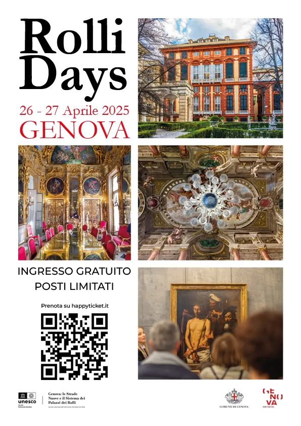
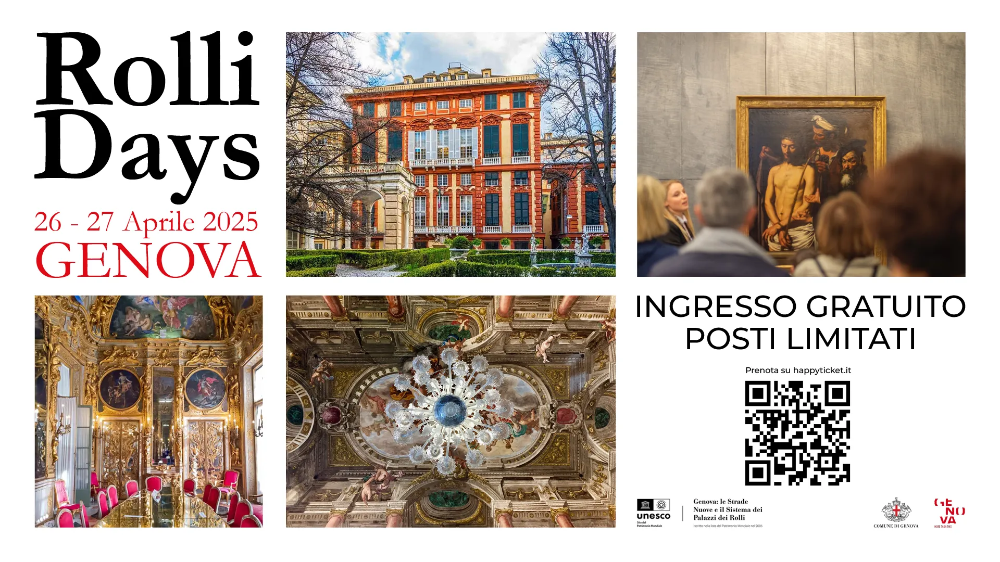
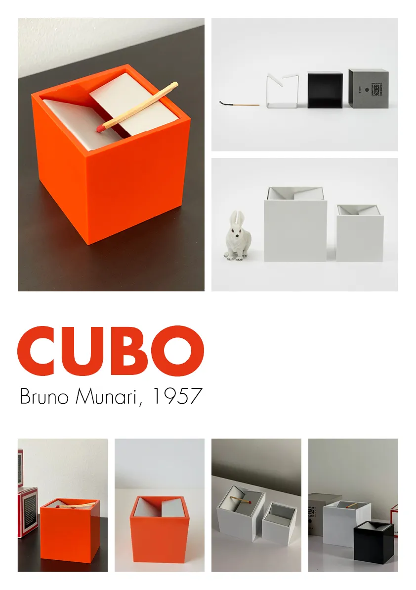

Cosa ho progettato
Ho realizzato degli elaborati grafici per promuovere l'evento dei Rolli Days, l'uscita di un libro dedicato a un target di adolescenti maschi riguardo alla decostruzione della maschilità tossica, per mettere in mostra oggetti di design in maniera pulita, come il noto posacenere di Munari. L'obiettivo principale è stato studiare la composizione con grande attenzione ai margini e utilizzare in maniera sapiente testo, immagini e segni grafici.
Come l'ho realizzato
Il flusso di lavoro si è diviso in due macrofasi. Inizialmente, ho riflettuto sugli obiettivi della comunicazione visiva, il target, il tone of voice. In seguito, ho stabilito le righe e le colonne della griglia compositiva, in modo da poter modulare in maniera efficace lo spazio. Infine, su InDesign ho aggiunto il testo, i colori, i segni grafici, le immagini adatte, ponendo cura alla disposizione di ogni elemento.
Il Risultato finale
Il risultato finale è costituito dal volantino per i Rolli Days in formato A4 per la stampa e in Full HD per il Web, da un volantino su un oggetto di design in formato A3 e da un manifesto sempre in formato A3 per la promozione del libro.

Volantino Rolli Days - Stampa

Volantino Rolli Days - Web
Manifesto Promozionale Libro

Manifesto Oggetto di Design